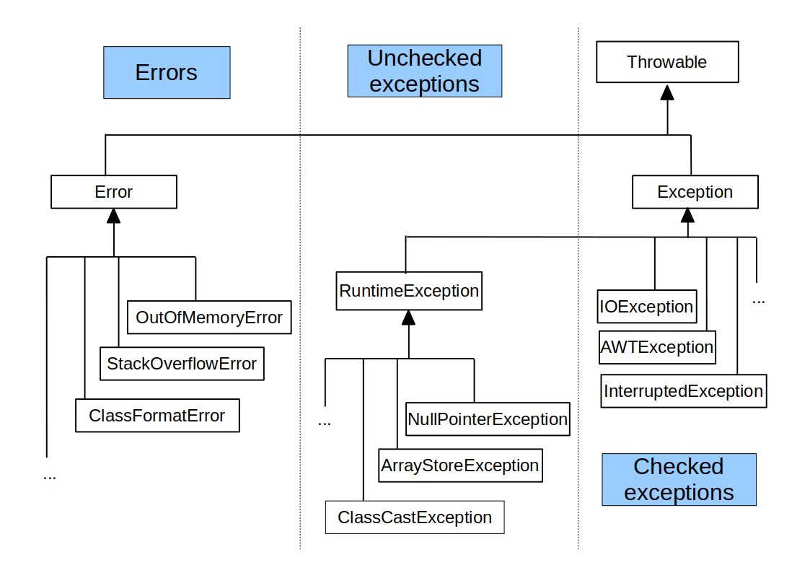

danilo.pianini@unibo.itgianluca.aguzzi@unibo.itangelo.filaseta@unibo.itCompiled on: 2025-09-23 — versione stampabile
throwtry-catch-finallythrowsErrore numerico
int divide(int x, int y) { return x / y; }
...
int z = divide(5,0);
// ERRORE: divisione per 0
Stack Overflow
int f(int i) { return i == 0 ? 0 : f(i + 1); }
...
int n = f(1);
// ERRORE: stack overflow
Deferenziamento di null
int mysize(List<?> l) { return l.size(); }
...
int n=mysize(null);
Operazione non supportata
Collections.<Integer>emptySet().add(1);
// UnsupportedOperationException
/* ERRORE: emptySet() torna un Set immutabile
deve essere impedita l'invocazione di add() */
Elemento non disponibile
Iterator<Integer> i = Arrays.asList(1,2).iterator();
i.next();
i.next();
i.next(); // NoSuchElementException
/* ERRORE: il contratto d'uso degli Iterator prevede di non
invocare next() se hasNext() dà false */
Formato illegale
Integer.parseInt("10.4");
// NumberFormatException
/* ERRORE: parseInt() si aspetta una stringa che contenga,
carattere per carattere, un intero valido */
Argomento errato
public class LampRow {
private final Lamp[] row;
public LampsRow(final int size) {
if (size < 1) {
// lancio eccezione, argomento non valido!
}
this.row = new SimpleLamp[size];
}
...
}
Elemento non disponibile
public class LampRow {
private final Lamp[] row;
public Lamp get(int index) {
if (index >= row.size) {
// lancio eccezione, elemento assente!
}
}
...
}
java.lang.Throwable. Vengono “lanciati”:
throw <exception-object>;void m() throws SomeException, AnotherException { ... }
try {
m();
} catch (SomeException exception) {
// handle exception!
}
Tutti meccanismi che impareremo a progettare e implementare in questa lezione!
java.lang.Error e sottoclassijava.lang.RuntimeException e sottoclassijava.lang.Throwable tranne le precedenti
java.lang.RuntimeException del JDK, ossia non se ne definiscono di nuove tipologie
ArithmeticException errori di calcolo illegaleIllegalArgumentException per argomenti non supportatiIllegalStateException per errate sequenze di chiamate di metodo (inconsistenza interna)UnsupportedOperationException per parti del programma non ancora sviluppate o non supportatethrowthrowstry-catchException (per modellare problemi “domain-specific”)System.err) di un messaggio che include lo StackTrace – Thread.dumpStack();StackOverFlowError: stack esaurito (ricorsione infinita?)NullPointerException, ArrayStoreException, ClassCastException, ArrayIndexOutOfBoundsException, NumericException, OperationNotSupportedExceptionpublic class UncheckedStackTrace {
public static void main(String[] args) {
final int[] a = new int[]{10, 20, 30};
accessArray(a,1); // OK
accessArray(a,3); // Eccezione
accessArray(a,5); // Eccezione
}
public static int accessArray(final int[] array, final int pos) {
return array[pos];
}
}
/* Stampa dell'errore:
Exception in thread "main" java.lang.ArrayIndexOutOfBoundsException: 3
at UncheckedStackTrace.accessArray(UncheckedStackTrace.java:9)
at UncheckedStackTrace.main(UncheckedStackTrace.java:5)
*/
throwpublic class UncheckedThrow {
public static void main(String[] args) {
final int[] a = new int[]{ 10, 20, 30 };
accessArray(a, 1); // OK
accessArray(a, 3); // Eccezione
}
public static int accessArray(final int[] array, final int pos) {
if (pos < 0 || pos >= array.length) {
final String msg = "Accesso fuori dai limiti, in posizione " + pos;
throw new IllegalArgumentException(msg);
}
return array[pos];
}
}
/* Stampa dell'errore:
Exception in thread "main" java.lang.IllegalArgumentException: Accesso fuori dai limiti, in posizione 3
at it.unibo.apice.oop.p13exceptions.classes.UncheckedThrow.accessArray(UncheckedThrow.java:13)
at it.unibo.apice.oop.p13exceptions.classes.UncheckedThrow.main(UncheckedThrow.java:7)
*/
throw: una variante equivalentepublic class UncheckedThrow2 {
public static void main(String[] args) {
final int[] a = new int[] { 10, 20, 30 };
accessArray(a,1); // OK
accessArray(a,3); // Eccezione
}
public static int accessArray(final int[] array, final int pos) {
if (pos < 0 || pos >= array.length) {
final String msg = "Accesso fuori dai limiti, in posizione " + pos;
final RuntimeException e = new java.lang.IllegalArgumentException(msg);
throw e;
}
return array[pos];
}
}
throwthrow <expression-that-evaluates-to-a-throwable>;
throw new <exception-class>(<message-string>);
throw new <exception-class>(<ad-hoc-args>);
throw new <exception-class>();
try-catch, come vedremo dopo..)main, con la stampa su System.err (exception chaining)try-catchtry {
<body-maybe-throwing-an-exception>}
} catch(<throwable-class> <var>) {
<handler-body>
}
try {
RangeIterator r = new RangeIterator(a,b);
} catch(RuntimeException e) {
System.out.println(e);
}
try lancia una eccezione del tipo specificato nella catchtry-catch-finallytry {
<body-maybe-throwing-an-exception>}
} catch(<throwable-class> <var>) {
<handler-body>
} catch(<throwable-class> <var>) {
<handler-body>
} catch(<throwable-class> <var>) {
<handler-body>
} finally {
<completion-body>
}
try lancia una eccezionecatch pertinente esegue l’handler (non ci possono essere sovrapposizioni!)completion-bodyfinally sarà comunque eseguito!finally?Exception o RuntimeException
super(...))MyExceptionpublic class MyException extends RuntimeException {
// tengo traccia degli argomenti che hanno causato il problema
private final String[] args;
public MyException(final String s, final String[] args) {
super(s);
this.args = args;
}
// modifico la toString per evidenziare this.args
public String toString() {
return "Failed with arguments: " + java.util.Arrays.toString(args);
}
}
UseMyExceptionpublic class UseMyException {
public static void main(String[] s) {
try { // attenzione alla formattazione di questo esempio!
final int a = Integer.parseInt(s[0]);
final int b = Integer.parseInt(s[1]);
final var iterator = java.util.List.of(a, b).iterator();
System.out.println(iterator.next());
System.out.println(iterator.next());
System.out.println(iterator.next()); // Exception
} catch (Exception e) { // Exception caught!
final RuntimeException e2 = new MyException("Re-throwing: " + e, s);
throw e2;
}
}
}
/* Esempio: java UseMyException 10 13.1
Exception in thread "main" Failed with arguments: [10, 13.1]
it.unibo.exceptions.classes.MyException:
Rilancio di: java.lang.NumberFormatException: For input string: "13.1"
at it.unibo.exceptions.classes.UseMyException.main(UseMyException.java:14)
*/
RuntimeException o sottoclassiException o sottoclassi ma non di RuntimeExceptionthrows)try-catchthrows
IOException e input da tastieraimport java.io.*;
public class IOFromKeyboard {
// La dichiarazione throws qui è obbligatoria!
public static int getIntFromKbd() throws IOException {
InputStreamReader ISR = new InputStreamReader(System.in);
BufferedReader keyboardInput = new BufferedReader(ISR);
String line = null;
line = keyboardInput.readLine(); // IOException
return Integer.parseInt(line);
}
public static void main(String[] args) throws Exception {
System.out.print("Inserisci un numero: ");
int a = getIntFromKbd();
System.out.println("Hai inserito il num.: " + a);
}
}
import java.io.*;
public class IOFromKeyboard2 {
private static final BufferedReader KBD =
new BufferedReader(new InputStreamReader(System.in));
private static int getIntFromKbd() throws IOException {
return Integer.parseInt(KBD.readLine());
}
public static void main(String[] args) {
try {
System.out.print("Inserisci un numero: ");
final int a = getIntFromKbd();
System.out.println("Hai inserito il num.: " + a);
} catch (IOException e) {
System.out.println("Errore di I/O: " + e);
} catch (NumberFormatException e) {
System.out.println(e);
}
}
}
import java.io.*;
public class IOFromKeyboard3 {
private static final BufferedReader KBD = new BufferedReader(
new InputStreamReader(System.in));
private static int getIntFromKbd() throws IOException {
return Integer.parseInt(KBD.readLine());
}
public static void main(String[] args) throws NumberFormatException {
while (true) {
try {
System.out.print("Inserisci un numero: ");
final int a = getIntFromKbd();
System.out.println("Hai inserito il num.: " + a);
} catch (IOException e) {
System.out.println("Errore di I/O: " + e);
}
}
}
}
public class IOFromKeyboard4 {
// L'uso di System.console().readLine() non lancia eccezioni
public static void main(String[] args) {
while (true) {
System.out.print("Inserisci un numero: ");
final int a = Integer.parseInt(System.console().readLine());
System.out.println("Hai inserito il num.: " + a);
}
}
}
/*
* Si controlli la classe java.lang.Console, fornisce varie funzioni utili per
* l'I/O, come le stampe formattate tipo printf
*/
danilo.pianini@unibo.itgianluca.aguzzi@unibo.itangelo.filaseta@unibo.itCompiled on: 2025-09-23 — versione stampabile